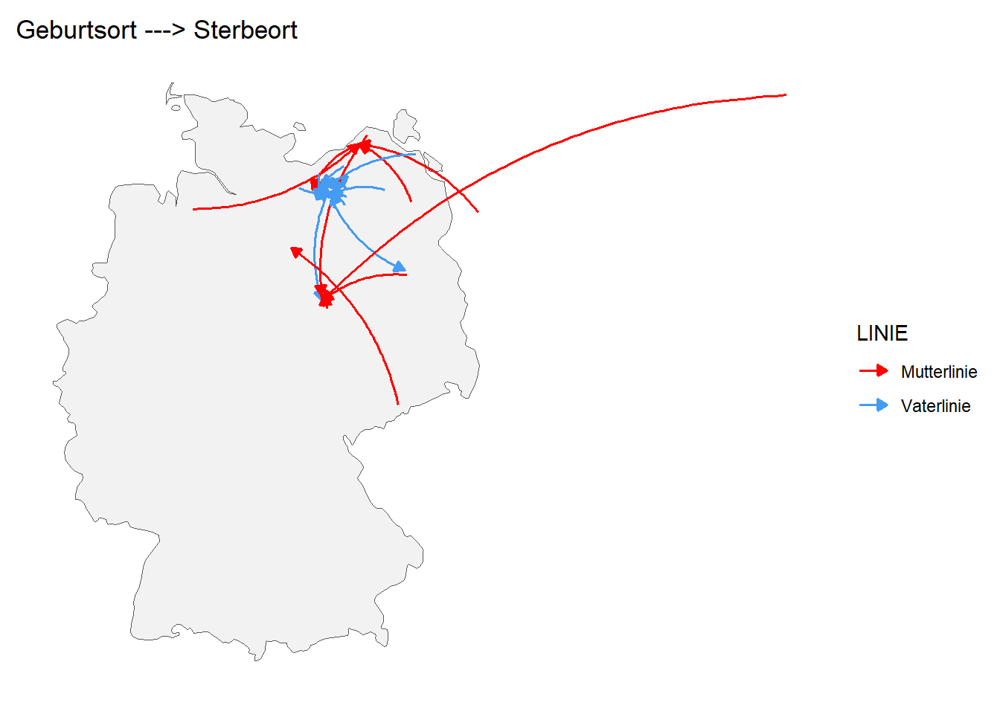

Ahnen Familie Niemann - Karten
Geburtsorte + Layer-Symbol: verschiedene Hintergründe
Varianten verschiedener Hintergründe
siehe auch hier http://leaflet-extras.github.io/leaflet-providers/preview/
hier ist auch mal diese Lizenz-Zeile unten ausgeblendet (für Druck besser?)
Geburtsorte nach LINIE
V1 - inverser Rand
V2 schwarzer Rand
V3 kein Rand
Pfeile V1
Erster Versuch mit leaflet.minicharts -> nicht optimal
(Entfernung Geburts-/Sterbeort > 20 km)
Pfeile V2
Mit ggplot, eingefärbt nach LINIE
